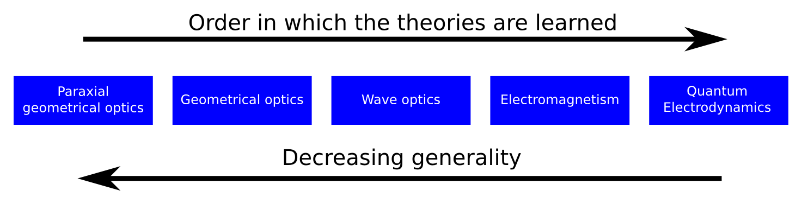

Relearning paraxial optics
As a microscopist who designs and builds custom microscopes, I often find that first order ray tracing is one of the most useful tools I have. It is most useful to me when I am starting a design or for checking that I have not made any serious logical blunders when working at the bench. I also find it to be a good teaching tool and excellent for communicating my designs to others.
Since I have recently made a lot of back-of-the-envelope ray trace designs for a microscope I am building at work, I have begun to critically think about why ray tracing works so well and how it fits inside the structure of the physical theories of optics.
Ray tracing is a technique derived from paraxial geometrical optics and really is just a consequence of the axioms and assumptions in the development of the theory. When I think back to when I first learned about paraxial optics, however, I am reminded of severe assumptions that place limits on the scope of its validity. So how can a theory that makes such an enormous simplification by treating the electromagnetic waves described by Maxwell's equations as lines obeying the rules of geometry still be so useful?
In this next series of blog posts, I want to explore this question and take the time to relearn paraxial optics with the benefit of hindsight. Physicists typically learn paraxial optics as their first theory of optics because it is relatively easy as compared to electromagnetism and quantum optics. I am curious what aspects of the theory I can appreciate now that I am familiar with the more advanced optical theories.
The picture below might also provide a bit of motivation for why this interests me: we physicists learn about optics theories in a direction of increasing complexity during our education. However, this approach also means that we learn the most general theories last, so it is not obvious why assumptions and approximations are made in the theories we learn first. The result, I think, leads to a bit of logical discordance in our minds that can prevent a clear understanding of the subject. With this series of posts I hope to remove this cognitive dissonance and improve my understanding of the field I work in.

Comments
Comments powered by Disqus